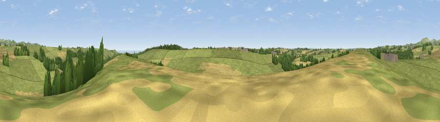

Viewpoint near Sticker
#30215 in England · top 52% of its area beats it · near StickerThe view, rendered

A 360° render of this exact spot computed from the terrain model, tree cover and land cover — summer colours, afternoon light, calibrated against photographs of famous viewpoints. Real trees, hedges and buildings will differ in detail.
The panorama
Grey silhouette: terrain skyline in each direction (720 bearings, Earth curvature and refraction included). Dashed green: skyline with trees (+15 m) and buildings (+8 m) as obstacles. Blue strip: how far the ground is visible on each bearing.
Where the view opens
Wedge length = distance to the farthest visible ground on that bearing (vegetation-aware). Rings at 10, 25 and 50 km.
What fills the view
72% grassland · 18% cropland · 9% woodland ·
Angular shares of the visible panorama (visual magnitude), not map area. Landscape diversity 0.36 (0–1 Shannon).
Key numbers
More beautiful places nearby
The staircase of upgrades: each row has a higher view potential than everything closer. Driving times are estimates from straight-line distance, calibrated against real road routing — check an actual route before setting out.
| Place | Direction | Drive | Score |
|---|---|---|---|
| Viewpoint near Pentewan | SE · 1 km | ~4 min | 45.4 |
| Viewpoint near Mevagissey | ESE · 4 km | ~8 min | 71.2 |
| Lobb's Shop Hill | ENE · 4 km | ~10 min | 72.9 |
| Viewpoint near Pentewan | E · 5 km | ~11 min | 74.7 |
| Viewpoint near Trewoon | N · 6 km | ~12 min | 77.9 |
| Viewpoint near Foxhole | NNW · 6 km | ~13 min | 84.3 |
| Viewpoint near Foxhole | NNW · 7 km | ~14 min | 86.4 |
| Viewpoint near Stenalees | N · 10 km | ~19 min | 88.0 |
50.29644, -4.82596 · source: screening · position refined by local search. Computed location — check access rights before visiting.